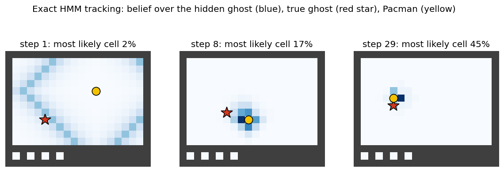

← Back to CS 188 Projects
Tracking Invisible
CS 188 | Project 4 | Summer 2026
Tracking Invisible
Ghosts.
Pacman hunts ghosts he cannot see, using only noisy distance readings. I implemented Bayes net inference with variable elimination, exact HMM tracking with the forward algorithm, and a particle filter; a greedy hunter using these beliefs wins every test game.
Headline20/20 autograder · 10/10 hunts won with exact inference (avg 763) · 5/5 with a particle filter
- Course
- CS 188, Introduction to Artificial Intelligence
- Project
- Project 4: Ghostbusters
- Timeline
- Summer 2026, UC Berkeley
- Topics
- Bayes nets, variable elimination, HMMs, particle filters
20/20autograder score
10/10hunts won with exact inference (avg score 763)
5/5hunts won with the particle filter (avg score 364)
45%belief on one cell after 29 readings, up from 2%
Overview
The ghosts are invisible. Each turn Pacman only gets a noisy reading of how far away each ghost is. To catch them he has to keep a probability distribution over where every ghost could be, update it with each new reading, and account for how ghosts move between readings. This project builds that machinery from Bayes net basics up to a working tracker.
Approach
- Bayes net and factors. Built the network for the game (Pacman position, ghost positions, noisy observations), then the two core factor operations: joining factors on a shared variable and summing a variable out.
- Variable elimination. Answers queries by joining and eliminating hidden variables one at a time, instead of enumerating the full joint distribution.
- Observation model. The probability of a noisy distance reading given Pacman’s and the ghost’s positions, including the special case of a captured ghost sitting in jail.
- Exact tracking (forward algorithm). Each turn: predict where the ghost may have moved using its transition model, then weight every position by how well it explains the new reading and normalize.
- Particle filter. Represents the belief with a set of samples. Particles move by sampling ghost moves, get weighted by the reading, and are resampled; if every weight hits zero, the filter reinitializes.
- Greedy hunter. Moves toward the most likely position of the closest ghost under the current belief.
Time elapse: B′(Xt+1) = Σxt P(Xt+1 | xt) B(xt)
Observation: B(Xt+1) ∝ P(et+1 | Xt+1) B′(Xt+1)
Observation: B(Xt+1) ∝ P(et+1 | Xt+1) B′(Xt+1)
B is the belief (a distribution over ghost positions), e the noisy distance reading. The particle filter approximates both steps with samples.
Results
| Test | Result |
|---|---|
| Exact inference, greedy hunter, small board (10 games) | 10/10 wins, all above 700 points, average 763 |
| Particle filter observation updates, one ghost (10 games) | 10/10 wins, average 180 |
| Particle filter full tracking, small board (5 games) | 5/5 wins, average 364 |

What I learned
- Uncertainty can be tracked, not just tolerated. Two simple updates, predict and correct, turned useless single readings into a confident estimate.
- Exact inference has a scaling wall. Exact tracking keeps a probability for every cell; particles trade exactness for a fixed cost and still won every game.
- Order matters in variable elimination. Which variable is eliminated first decides how large the intermediate factors get, and so how expensive a query is.
Project framework and specifications are from the CS 188 course staff (the Berkeley Pacman AI projects). The implementation and write-up are my own; the code is kept private in line with course academic-integrity policy. Results come from re-running my finished code.